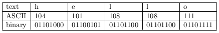
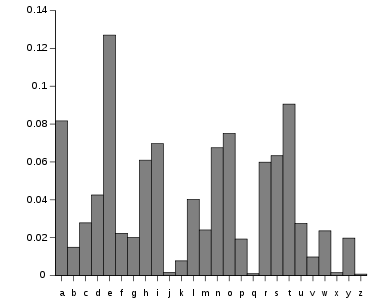
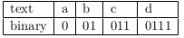
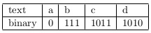
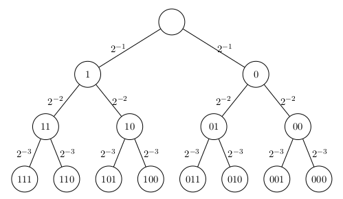

In this article, I'll try to explain Shannon Entropy with one of its use case: data-compression. First, I'll provide a small introduction about data-representation and a need for compression with very brief information about its requirements. Consequently, I'll derive the proof of well-known entropy formula in the equation below that estimates the average minimum number of bits needed to encode information with priorly known probabilities:
H(X) = -\sum_{i}p_{i}\log_{b}p_{i}
Data Representation and Compression
We all know that the way that our digital devices store data as ones and zeros, aka in binary format. So, our understanding of the smallest chunk of information is: "whether there is a voltage or not".
We represent letters of a text, pixels of an image, etc. in binary format.
Below, I provide an ASCII (American Standard Code for Information Interchange) encoded "hello" below. In ASCII, each letter -and other control characters, such as \texttt{DEL} and numbers like 1, 2 etc.- consists 8 bits. So, the text that we see is "hello", but the information that a digital device stores are:

ASCII encoding of "hello"
So, there are 26 letters in the English alphabet, and we can say that $5$ bits would be enough to encode all characters, since :
2^{5} = 32 > 26
Nevertheless, ASCII has 127 different values --See Reference 1, which at least requires 7 bits per value. The rest of the document tries to answer the following question:
"What would be the minimum number of bits that we have to use if we knew the distribution of letters for a particular text that we have?"

Frequency Table of English letters
So, as it could be seen in Figure above --and we all well-know, some of the letters are more often used than the others. Here, letter "e" is the most commonly used one in English. So, would it be better to represent "e" with fewer bits than the others, if the letter distribution of our text would be exactly the same with the distribution above. If so, how less could it be?
Uniquely Decodable Codes
A code is a mapping of source messages into codewords. As an example, ASCII code above maps letters (as a source message) to codewords --such as letter "h" to number 01101000.
Here, a code is distinct if each codeword is distinguishable from every other (i.e., the mapping from source messages to codewords is one-to-one). A distinct code is uniquely decodable if every codeword is identifiable in a sequence of codewords.
Prefix Codes
A uniquely decodable code is called a prefix code (or prefix-free code) if it has the prefix property, which requires that no codeword is a proper prefix of any other codeword.
The code below is decodable but it is not a prefix code because the codeword for "a" is a prefix for the codeword for "b". This means that we can not instantaneously decode "a" without waiting for the next bit of data (to determine whether it is actually "a" or just the first half of "b".)

Uniquely decodable non-prefix code
Alternatively, the code below is a prefix code, since no codeword is a prefix of another codeword.

Uniquely decodable prefix code
Kraft's Inequality
Kraft's inequality states that given a list of positive integers (n_{1}, n_{2}, \dots, n_{r}) there exists a prefix code with a set of codewords (\sigma_{1}, \sigma_{2}, \dots, \sigma_{r}) where the length of each codeword |\sigma_{i}| = n_{i}, \forall_{i} if and only if:
\sum_{i=1}^{r} s^{-n_{i}} \leq 1
where s is the size of the alphabet S.
In our previous example code, the alphabet is simply the binary digits S = \{0, 1\}, and therefore the size of the alphabet s = 2. We can easily check that indeed the inequality holds:
2^{-1} + 2^{-3} + 2^{-4} + 2^{-4} \leq 1
Proof
As it could be observed in the following Code Tree, there are s^{n_{j}} combination of codewords where we could chose for j_{th} level if there was no prefix constraints, but due to the codeword at a prior level k < j, s^{n_{j} - n_{k}} amount of codewords are forbidden, since they contain \sigma_{k} as a prefix. In other words, to satisfy prefix-code requirements, each codeword must be represented by a leaf node, since it has to eliminate its descendants as codewords.

Code Tree
So, a codeword at level j has s^{n_{r}-n_{j}} descendants (where n_{r} is the length of longest codeword) at the highest level. For instance 1 has 2^{3-1} descendants which are "111", "110", "101" and "100".
Besides, descendant sets of codewords must be disjoint to satisfy prefix-free requirement. As an example, "1" and "10" has joint descendants, which are "101" and "100", hence a prefix-free codeword can not contain both "1" and "10".
So, we know that the total number of forbidden codewords at step j is:
\sum_{i=1}^{j-1} s^{n_j - n_i}
As an example, if our level j=3, we would have 6 forbidden codewords which can also be observed from the Code Tree above:
For each level j, we possibly have s^{n_j} codewords; and this amount should exceed the number of forbidden codewords for level j to have a prefix codeword set. Here we apply this lemma for highest level r below, which implies the Kraft Inequality:
where we simply use the fact that \log_{s} is a concave function and apply Kraft's inequality. So, here we prove that Shannon entropy converges the expected length of the prefix-free code.